📰 Últimas Noticias del Torneo Morao
🕓 Nota: Las noticias están ordenadas cronológicamente de abajo hacia arriba. Para seguir la historia completa, comienza leyendo desde la parte inferior.
⚖ Aviso Legal - Pulsa para desplegar
Todas las publicaciones de esta sección son totalmente ficticias y se han redactado en tono humorístico y con fines puramente entretenidos, sin ánimo de ofender, vejar o perjudicar a ninguna persona o entidad.
Estas noticias han sido desarrolladas libremente a partir del contenido publicado por los propios equipos participantes en redes sociales durante el Torneo Morao 2025.
Si alguna persona o equipo se siente incómodo con alguna publicación, puede solicitar su retirada escribiendo a la dirección indicada en el pie de página:
albertorfesp@gmail.com.
🎲 ¡Ya se conocen los emparejamientos oficiales del Torneo Morao 2025!
20 junio 2025
En una tarde marcada por la expectación, la Real Hermandad de Nuestro Padre Jesús Nazareno fue testigo del esperado sorteo de la fase de grupos masculina.
El torneo contará con dos grupos (A y B), repletos de rivalidades históricas y cuentas pendientes.
🔵 Grupo A: Con Tu Cruz Castilla, CD Giro, SPQR y Vaquillas. Un grupo con aroma a clásicos, en el que CD Giro y SPQR se verán las caras desde la primera jornada, mientras que la tensión entre Vaquillas y Con Tu Cruz puede estallar en cualquier momento.
🟣 Grupo B: Totys, Tromponetas, Real Canteranos y Atlético Polito. El llamado “grupo de la muerte”. Aquí Totys tendrá que vérselas con sus dos grandes rivales —Tromponetas y Canteranos— en una fase de grupos que promete fuego cruzado desde el inicio. Polito, mientras tanto, deberá reponerse del caos institucional si quiere hacer historia en su debut.
Desde los primeros minutos tras el sorteo, algunos equipos ya han comenzado a calentar en redes. Tromponetas publicó una imagen de sus botas afiladas “listas para la batalla”, mientras que en SPQR solo se limitaron a publicar una calavera con fondo violeta. Cada uno con su estilo.
⚖ Solo dos equipos de cada grupo pasarán a la final four. La fase de grupos promete espectáculo, piques, goles… y alguna que otra publicación polémica.
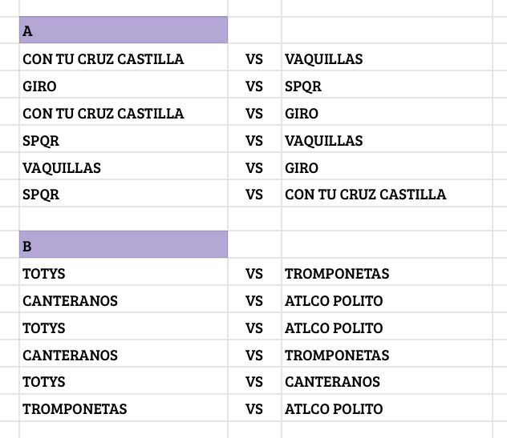
CD Giro responde con elegancia ante la polémica por sus equipaciones: “La actitud no depende de una camiseta”
20 junio 2025
Tras varios días de rumores y bromas por parte de otros clubes sobre la ausencia de su indumentaria oficial, CD Giro ha roto su silencio
con una publicación que mezcla humildad, crítica sutil y carácter. En un comunicado publicado en sus redes, el club reconoce que “la equipación no llegará”,
pero lejos de mostrarse afectados, reivindican su esencia más allá de lo visual.
“El negro combina con todo”, comienza el mensaje, en referencia al color con el que saltarán al campo. No dudan en señalar también que “una web
con nombre importante” ha tenido parte de responsabilidad en el retraso, pero rápidamente aclaran: “La actitud del GIRO no depende de una camiseta”.
La publicación ha sido aplaudida incluso por voces externas, que destacan la madurez del mensaje.
Sin embargo, desde SPQR o Tromponetas no ha faltado quien lanzara algún “mejor que combinen bien en defensa” o “que se note en el campo y no en Instagram”.
Lo que está claro es que, con o sin equipación oficial, CD Giro jugará con la misma intensidad y fe que los caracteriza.
En palabras de uno de sus capitanes: “Nosotros no necesitamos tela, necesitamos respeto”.
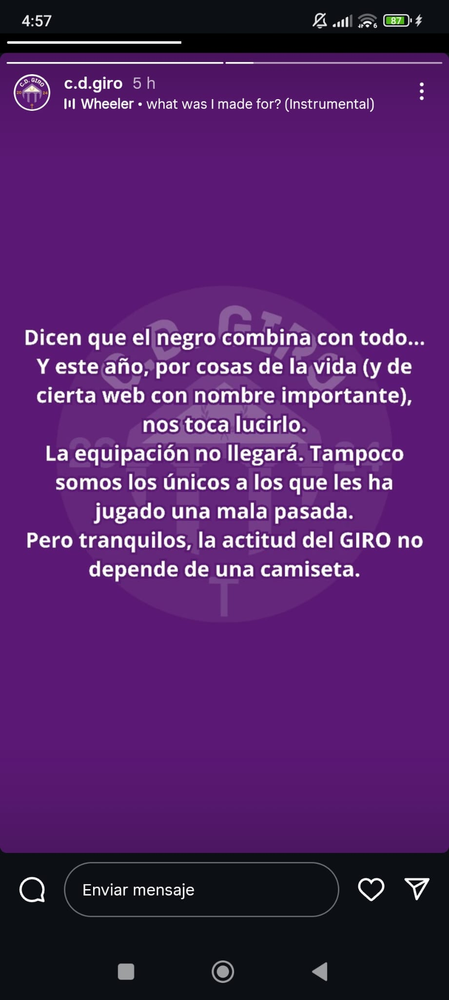
CD Giro entra al torneo como emperadores: “No venimos como visitantes… entramos como institución”
20 junio 2025
Si alguna duda quedaba de que CD Giro es un equipo con identidad marcada, su último vídeo promocional la ha disipado por completo.
En un espectacular render 3D, el escudo del club aparece entre columnas clásicas, con una figura romana descendiendo las escalinatas, mientras la leyenda reza:
“No entramos como visitantes… entramos como institución”.
El reel ha sido aplaudido incluso por cuentas rivales, aunque desde Atlético Polito se ha filtrado con ironía:
“Muy bonito el templo. Que traigan también las camisetas, si llegan…”, en referencia a los retrasos en su equipación.
Pero si algo ha dejado claro CD Giro es que su proyecto va más allá del césped. En redes ya se habla de “estética imperial”,
de “gloria digital” y de que están construyendo “algo más que un equipo”.
Queda por ver si esa energía se traduce en resultados…
pero por ahora, en narrativa y estilo, CD Giro ya es campeón.
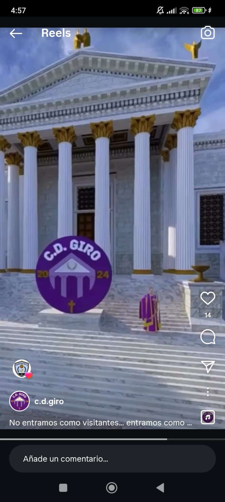
Rizitos II pasa por fisioterapia antes del debut: “Nos jugamos el alma, y la espalda”
20 junio 2025
En un vídeo publicado en su perfil oficial, Con Tu Cruz Castilla ha mostrado a su icónica mascota Rizitos II recibiendo tratamiento de fisioterapia en la clínica Naturopatía Esperanza.
En camilla, con camiseta oficial y bajo estiramientos profesionales, el roedor más famoso del torneo se prepara para dejarlo todo en el campo este sábado.
La publicación, que rápidamente ha generado reacciones, ha sido interpretada como una declaración de guerra deportiva: Rizitos está bien, está fuerte… y está listo.
Fuentes internas aseguran que “se ha quitado el dolor, la tensión y los complejos. Va con todo”.
Desde Canteranos Jr., tras su compra reciente de mataratas, se ha filtrado un mensaje en clave: “Que se recupere bien, para que no haya excusas después”.
Mientras que desde SPQR, alguien preguntó si el fisio también “recoloca el sentido del humor”.
Lo cierto es que Rizitos II se ha convertido en el rostro (y pelaje) de una campaña que mezcla risas, rivalidad y… fisioterapia.
¿Estrella mediática o MVP del sábado? La camilla ya ha hablado. El campo lo dirá.
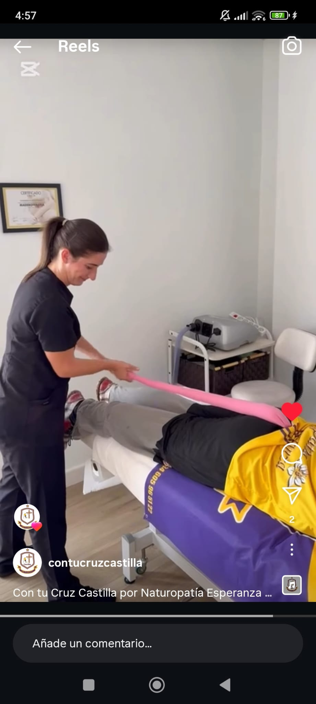
Cucurella se declara fan de Tromponetas: “¡Yo soy Tromponeta!”
20 junio 2025
Lo que parecía una simple coincidencia en Málaga se ha convertido en un momento histórico para Tromponetas F.C.: varios jugadores del equipo se cruzaron con el futbolista del Chelsea, Marc Cucurella, y no dudaron en preguntarle por su afiliación futbolística en el Torneo Morao.
La respuesta fue clara y directa: “¡Yo soy Tromponeta!”.
El vídeo no tardó en viralizarse, acompañado del hashtag #yosoytromponeta y una mención especial al artista @adrinavarromusic, lo que ha elevado los niveles de euforia en redes sociales.
Algunos ya lo definen como “el fichaje moral más importante del torneo”.
Desde el entorno de Totys, SPQR y Canteranos Jr. han reaccionado entre risas y sarcasmo: “Está bien tener a Cucurella… pero que juegue Rizitos II”, comentó un usuario.
Otros apuntan que “ni con un once de la Premier frenan las patadas de la Purple League”.
Sea como sea, el respaldo de un jugador de la élite inglesa no es poca cosa.
Tromponetas gana hype, memes… y quizás también algo de respeto.
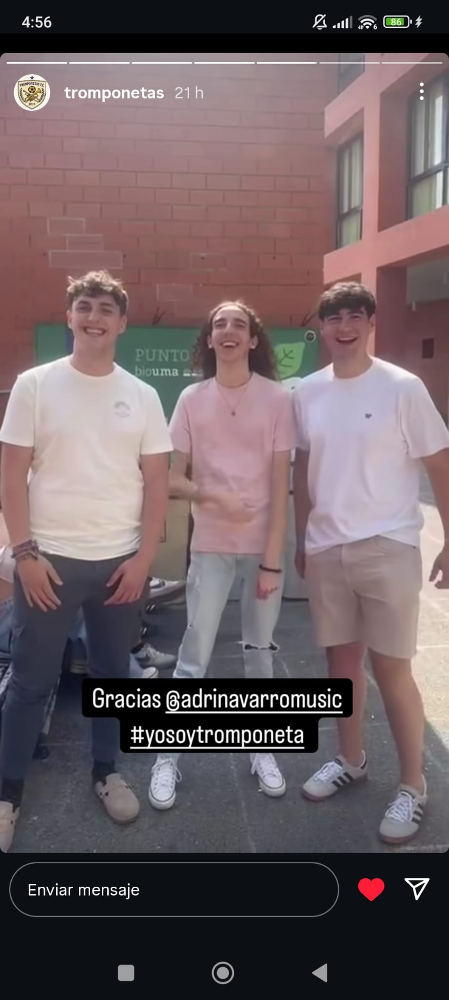
Totys Fem presenta su equipación: “Aquí no solo suena el balón… suena el alma”
20 junio 2025
Con una publicación que mezcla emoción, identidad y mucho simbolismo, Totys Femenino ha revelado su nueva equipación para el Torneo Morao 2025.
“Cada color, cada detalle… tiene un sentido. Tiene historia”, reza el post que ya circula entre cuentas rivales y seguidores de la competición.
El blanco representa pureza y juego limpio. El morado, la hermandad que llevan en el alma. El dorado, la alegría juvenil de una generación que pisa fuerte.
Pero lo más llamativo está en su escudo, que definen como “una caja de música”: una referencia directa a que gran parte del equipo también forma parte de la banda.
“Aquí no solo suena el balón… suena el alma”, concluye la publicación, en lo que muchos han interpretado como un mensaje indirecto a Tromponetas Fem, con quienes ya ha habido algunas chispas en redes.
Mientras unas graban pin pones, Totys se arropa en sus raíces.
En un torneo donde el show en redes a veces eclipsa al fútbol, las moradas han decidido hablar de valores, de historia… y, de paso, dejar claro que vienen con todo.
Porque si algo está claro, es que Totys juega con alma… y con memoria.
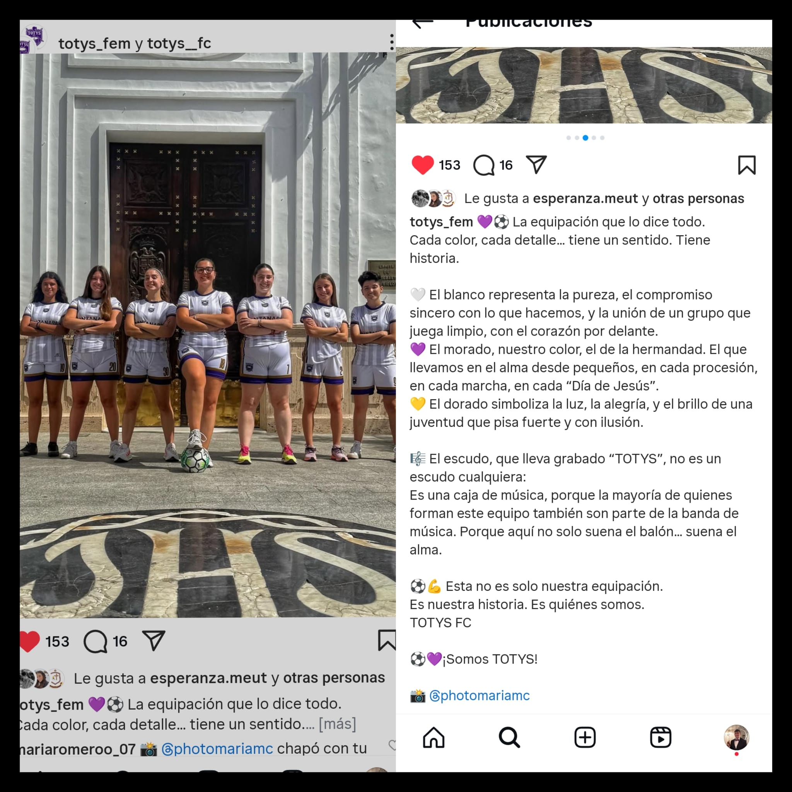
Tromponetas revive el penalti maldito de Con Tu Cruz Castilla: “El balón sigue orbitando”
20 junio 2025
Cuando pensábamos que el penalti de 2023 ya era historia… Tromponetas lo ha vuelto a poner sobre la mesa. En una doble historia cargada de ironía y veneno, el club ha respondido a una encuesta de Con Tu Cruz Castilla sobre su escudo con un mensaje letal:
“Lo encontramos en la luna, al igual que el balón de vuestro penalti”.
Pero no se quedaron ahí. En la siguiente historia, un vídeo de un peluche jugando al billar aparece con el texto: “Raúl Rivero tirando el penalti decisivo en 2023”,
rematado con un: “Encontrasteis el escudo pero no el balón”.
Las reacciones no tardaron: seguidores de Con Tu Cruz defendieron a su jugador y recordaron que Tromponetas también ha vivido eliminaciones dolorosas.
Aun así, en redes sociales ya se viraliza el hashtag #BalónEnLaLuna.
Desde la organización han pedido que los equipos “rebajen la tensión”, pero parece que nadie está dispuesto a guardar los memes.
En el fútbol, se puede fallar un penalti… pero no olvidar uno así.
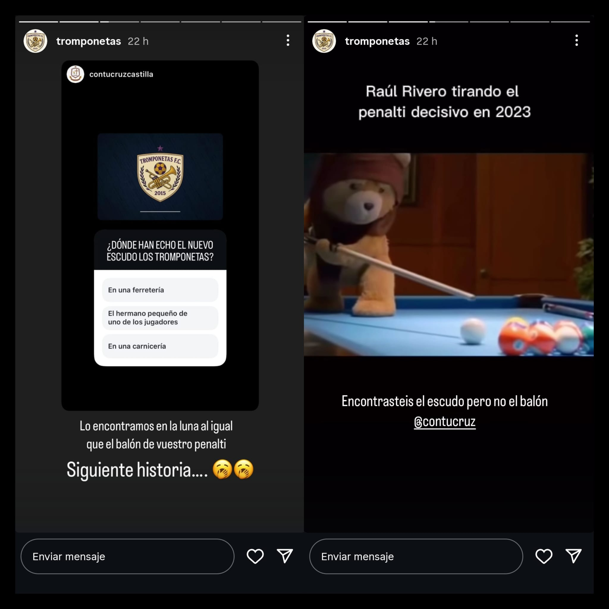
Tromponetas Fem avisa: “Vamos a ganar a Totys Fem”
20 junio 2025
En una dinámica distendida pero directa, el conjunto de Tromponetas Femenino ha publicado su primer pin pon con una de sus jugadoras clave:
Elena Pérez, dorsal número 14 y defensora con carácter. Y aunque la entrevista fue informal, dejó titulares.
En uno de los fragmentos más destacados, Elena responde sin titubear: "Sí, creemos que vamos a ganar a Totys Fem. Estamos preparadas y lo vamos a dar todo".
La frase ha sido celebrada por la afición tromponetera y, cómo no, enviada por privados a cuentas rivales con emojis de fuego.
La jugadora también confirmó que su posición favorita es la defensa, y aseguró que el grupo está “motivadísimo” con el torneo.
Desde Totys aún no hay respuesta oficial, aunque un “me gusta” de una jugadora rival en el vídeo ya ha encendido las alarmas.
El partido entre Totys Fem y Tromponetas Fem se presenta como uno de los más calientes de la fase de grupos femeninos.
¿Seguridad o exceso de confianza? Lo sabremos cuando ruede el balón.
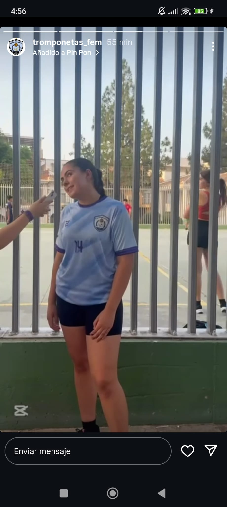
Atlético Polito se burla del “Fair Play” de Tromponetas: “Candidatos al Nobel de la Paz”
20 junio 2025
La tensión entre equipos no deja de crecer, y Atlético Polito ha vuelto a la carga. En una nueva historia viral, el club ha compartido un vídeo acompañado del mensaje:
“POV: @tromponetas haciendo méritos para ganar el fair play”, acompañado de una escena de un jugador senior siendo ayudado a salir del campo… tras ser, presumiblemente, destruido.
La publicación llega en un momento delicado, donde Tromponetas F.C. ya acumula memes, críticas y acusaciones de juego duro por parte de SPQR, Canteranos Jr. y Totys.
Ahora, Polito se suma al tren del hate con una indirecta convertida en meme explícito.
Desde el entorno de Tromponetas no han respondido directamente, aunque fuentes internas aseguran que “el único contacto que van a dar es con el balón… y si se cuela alguien, con la tibia”.
El público, por su parte, empieza a dividirse: algunos ya los han bautizado como los “Bad Boys del Morao”, mientras otros advierten que “de tanto hate, al final se les va a dar por ganar el torneo”.
El premio Fair Play aún no está definido, pero si fuese por menciones... Tromponetas ya lo ha ganado todo.
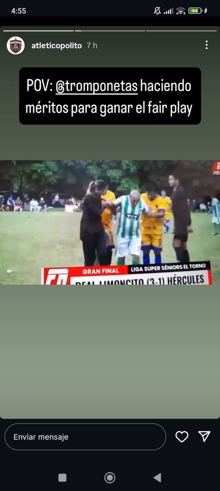
Atlético Polito calienta el sábado con beef directo a SPQR, Totys y Tromponetas
20 junio 2025
El ambiente previo a la jornada del sábado no podía estar más tenso… ni más cómico. En una story subida por Atlético Polito, se puede ver la imagen de un mono disfrazado
maquillándose frente al espejo, con el texto: “GRWM un sábado de Purple League con: @real.spqrbalompie @totys_fc @tromponetas”.
La sigla GRWM (Get Ready With Me) usada irónicamente, junto a la imagen, apunta sin disimulo a que estos tres equipos, según Polito, dedican más tiempo al postureo
que a preparar los partidos.
La publicación no ha tardado en generar reacciones: desde Totys aseguran que "al menos salimos bien en cámara, no como sus estadísticas". SPQR respondió con un breve y agresivo "Nos vemos en el campo, mono incluido".
Tromponetas, por su parte, compartió un reel en el que aparecen afilando tacos con la frase "¡Sábado de estilismo… y de entradas fuertes!"
El sábado se presenta picante, y la Purple League será cualquier cosa menos silenciosa. ¿Maquillaje o marcador? El césped dará la última palabra.
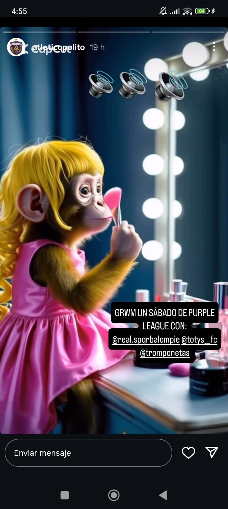
CD Giro sigue esperando sus equipaciones: "Su pedido está en camino"
20 junio 2025
A pocos días del inicio oficial del Torneo Morao 2025, el equipo de CD Giro sigue sin recibir sus equipaciones oficiales. La situación no ha pasado desapercibida para el resto de clubes, que han aprovechado para lanzar memes, pullas y comentarios poco solidarios (pero muy creativos).
La imagen más viral ha sido la de un jugador con camiseta blanca impoluta y la frase “SU PEDIDO ESTÁ EN CAMINO”, acompañada de un guiño directo: “Enhorabuena @c.d.giro, no tendréis que lavarla para el año que viene”.
Desde el entorno del club reconocen que el proveedor ha tenido “retrasos logísticos”, pero aseguran que “aunque la camiseta sea blanca, el juego será morado”.
Con Tu Cruz Castilla FC no ha perdido la oportunidad de sumarse al cachondeo: “Si necesitan camisetas, podemos prestarle unas de Rizitos”. Mientras tanto, SPQR propuso organizar una colecta: “Por solo 5€ puedes ayudar a un equipo a tener una camiseta digna”.
Desde la organización se confirma que podrán jugar aunque sea con petos, siempre que todos los jugadores vistan igual.
Aunque, viendo el panorama, tal vez lo que acaben estrenando primero... sea una buena dosis de humildad.
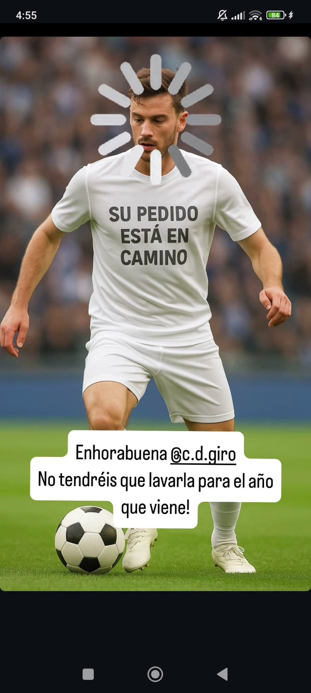
SPQR atiza a Tromponetas: “Así juegan en los amistosos”
20 junio 2025
La previa del torneo se calienta, y no precisamente por el sol. En una serie de historias publicadas en su perfil oficial, Real SPQR Balompié ha acusado públicamente a Tromponetas F.C.
de tener un estilo de juego... poco ortodoxo.
En las publicaciones se pueden ver clips de peleas, empujones y violencia gratuita, acompañados de frases como "Tromponetas en un partido amistoso ❤️" o "mostrando sus mejores jugadas".
La indirecta no ha pasado desapercibida y ha generado una avalancha de reacciones.
Desde Tromponetas aún no hay comunicado oficial, pero fuentes cercanas aseguran que "se están preparando para responder... pero en el campo".
Algunos jugadores incluso habrían compartido el reel con la frase: “Cuando te tienen miedo, te difaman”.
Mientras tanto, Canteranos Jr. ha comentado en tono neutral: "Nosotros solo queremos que no se nos lesionen los niños", y Totys ha puesto en su historia:
"Si hay sangre, que sea figurada".
El Torneo Morao 2025 aún no ha empezado oficialmente, pero ya hay más tensión que en una tanda de penaltis. Y como dicen algunos: los amistosos… son lo que menos tiene de amistad.
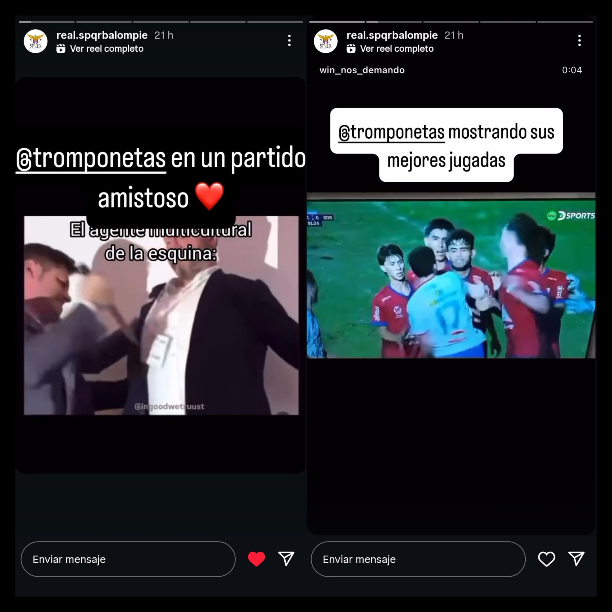
CD Giro extiende su marca por Andalucía... ¿promoción o vandalismo?
19 junio 2025
En los últimos días se han reportado avistamientos del escudo de CD Giro en múltiples puntos del sur de España. Fachadas, farolas, señales y hasta bancos públicos han aparecido adornados
con una misteriosa pegatina morada que no deja lugar a dudas: Giro está haciendo campaña, y no precisamente electoral.
La imagen más viral ha sido la de una pegatina estratégicamente colocada en el centro histórico de Sevilla, justo frente a la mismísima Giralda. Algunos han aplaudido el gesto como "difusión cultural del deporte local",
mientras que otros no han dudado en tildarlo de “vandalismo blando”.
Desde el club se han limitado a declarar: "Nosotros no confirmamos ni desmentimos nada. Si aparece el escudo, será porque el pueblo lo quiere".
Por su parte, Totys reaccionó con ironía: "Nosotros también repartimos pegatinas... en la frente de los rivales".
Lo que está claro es que CD Giro ha encontrado una forma original de marcar territorio, aunque fuentes de la organización ya han recordado que “solo se permiten goles, no grafitis”.
¿Campaña viral o exceso de celo? El balón lo dirá.
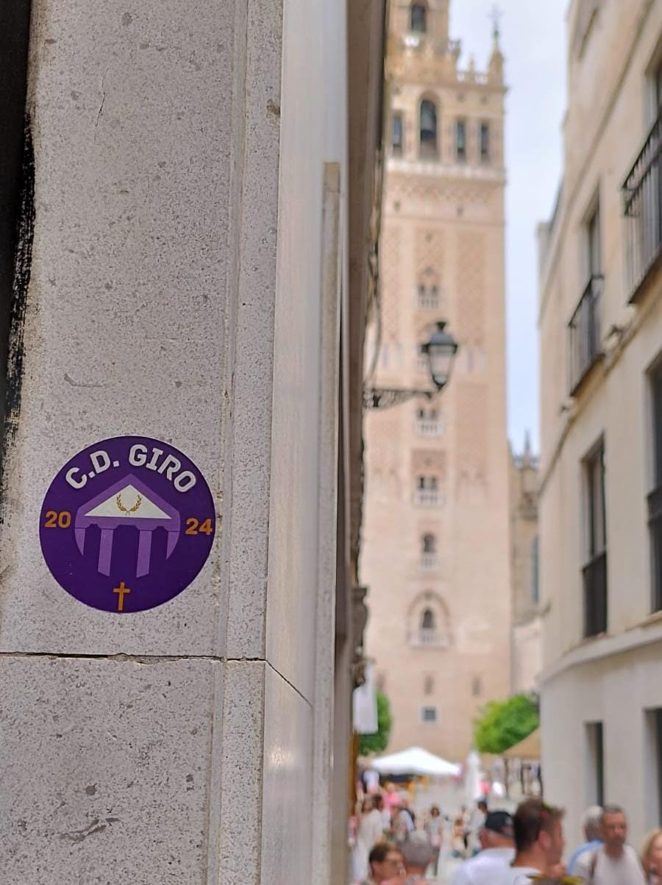
¡También juegan los peques! Real Canteranos Jr. y Los Escopeteros se verán las caras en la categoría infantil
19 junio 2025
Aunque el ruido mediático lo acaparan los equipos sénior, no podemos olvidar que el Torneo Morao 2025 también tiene espacio para el fútbol base.
Este año, la categoría infantil contará con dos escuadras dispuestas a darlo todo en el campo: Real Canteranos Jr. y Los Escopeteros.
Ambos equipos llegan con ilusión, energía y menos publicaciones en redes, pero con el mismo objetivo que el resto: defender sus colores con orgullo.
Se prevé un encuentro amistoso y emocionante entre ambos conjuntos, donde el compañerismo y la deportividad serán tan protagonistas como el balón.
Fuentes internas confirman que Los Escopeteros son un grupo compacto y con buena puntería (esperemos que solo futbolística), mientras que Real Canteranos Jr. llega como heredero
espiritual del bloque mayor, con ganas de demostrar que el futuro ya está aquí.
La organización ha preparado un formato especial para ellos, con horarios adaptados, árbitros atentos y un único objetivo: que vivan el torneo como lo que es: una fiesta del fútbol.
¡Que empiece la magia desde pequeños!
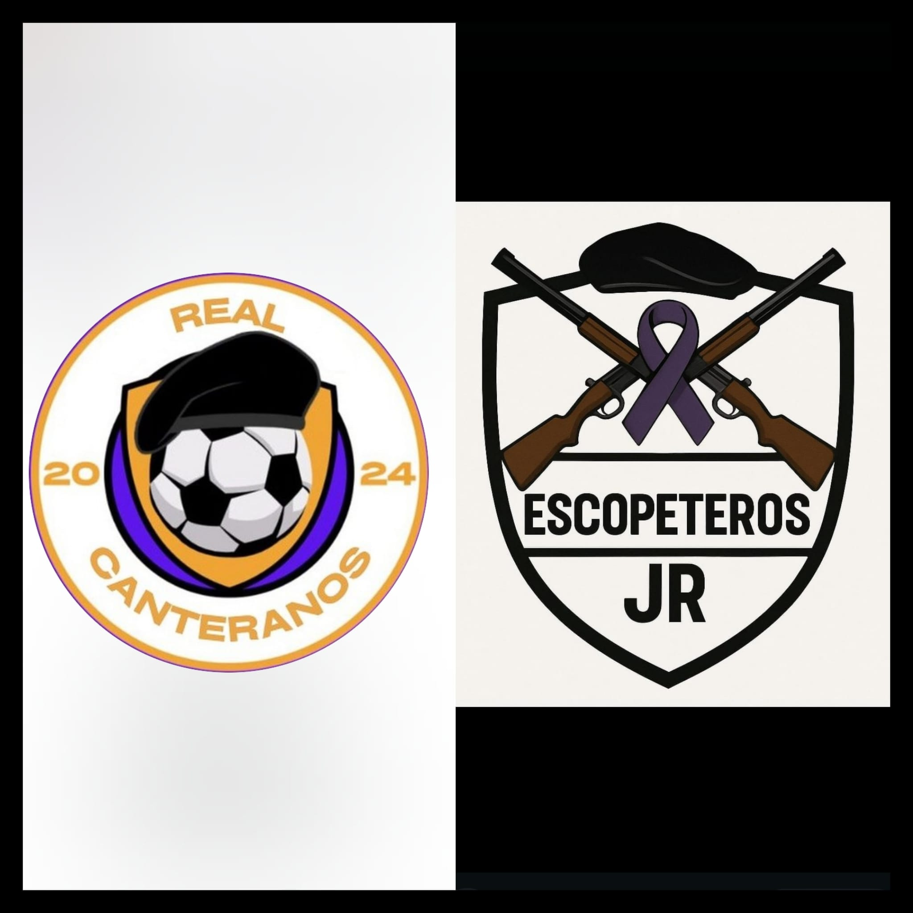
Se archiva el caso del Happy Meal: la justicia exonera a Con Tu Cruz Castilla F.C. y a Rizitos II
19 junio 2025
Tras días de incertidumbre, el Juzgado de Instrucción nº8 de Málaga ha decidido archivar el caso del jugador de Real Canteranos que fue hospitalizado
por una presunta intoxicación tras ingerir el polémico Happy Meal de Con Tu Cruz F.C., en colaboración con McDonald’s.
La resolución judicial ha determinado que “no existen pruebas concluyentes que vinculen el estado del jugador con la hamburguesa en cuestión”.
El juez también ha declarado inadmisible el intento de incluir a Rizitos II como co-responsable alimentario, afirmando que “una mascota disfrazada no puede ser procesada por delitos sanitarios”.
Desde Con Tu Cruz Castilla se celebró la noticia con una publicación donde se ve a Rizitos entrando al juzgado... y saliendo bailando. "Lo dijimos: las hamburguesas las hace la Rata,
pero con amor", escribieron.
Por su parte, Real Canteranos ha mostrado su descontento con el fallo, asegurando que "aunque el caso se archive, la confianza ya está envenenada".
No se descarta que el club emita un comunicado oficial apelando al comité de ética del torneo.
Desde CD Giro han pedido “madurez”, mientras que Tromponetas simplemente comentó: "Rizitos 1 - Sistema Judicial 0". El torneo sigue... pero las heridas aún no han sanado.
Rizitos II reaparece con nuevo look tras las críticas: "Lo importante es sentirse bien con uno mismo"
19 junio 2025
Cuando todos pensaban que Rizitos II no podía superarse, el ídolo roedor de Con Tu Cruz Castilla F.C. ha vuelto a romper Internet. Esta vez, no por una polémica,
sino por su nuevo cambio de imagen: peinado fresco, rizo definido y actitud de estrella lista para el torneo.
En un vídeo publicado en las historias del club, se puede ver a Rizitos entrando en una conocida barbería de Alhaurín con flotador, capa oficial del equipo
y paso firme. Minutos después, la cuenta oficial compartía el resultado: un Rizitos renovado y empoderado.
"Me han juzgado por mi peinado, mi bebida, mi balón... Pero aquí sigo, con más estilo que nunca", rezaba la publicación. La reacción ha sido inmediata: desde Totys afirmaron
que "parece sacado de una pasarela en París", mientras que Canteranos Jr. no tardaron en contraatacar: "Que se peine todo lo que quiera, pero en el campo no hay espejo".
Lo cierto es que Rizitos II ha pasado de mascota polémica a icono cultural. El Torneo Morao 2025 aún no ha comenzado, pero una cosa está clara: él ya ganó... en engagement.
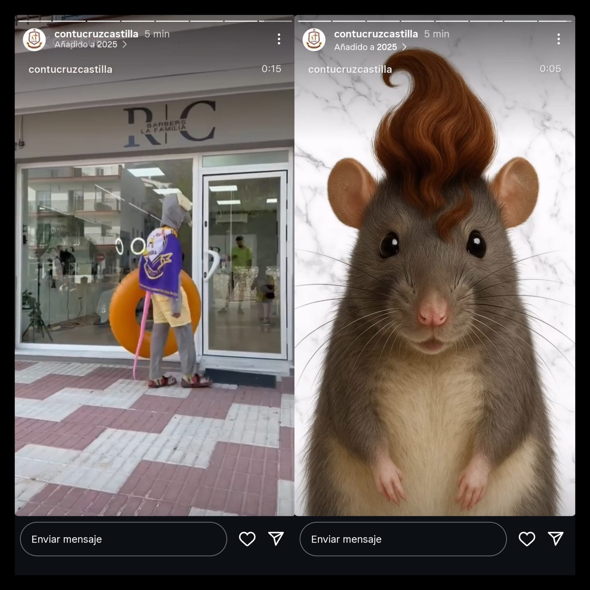
Polémica con Rizitos II: cerveza, basket y redes ardiendo
18 junio 2025
Una nueva polémica sacude al entorno de Con Tu Cruz Castilla F.C. después de que su mascota oficial, Rizitos II, subiera en su cuenta privada un vídeo en el que aparece
bebiendo cerveza en la barra de un bar y caminando hacia el campo con una pelota de baloncesto.
El vídeo no tardó en filtrarse y correr como la pólvora por grupos, foros y redes sociales. Acompañado de una encuesta con opciones como
"No distingue entre pelota" o "Aún tiene jet lag del viaje", el 62% de los usuarios votaron que "el pobre no da para más".
Desde el club han salido en defensa de su mascota estrella con un comunicado improvisado: "Rizitos ha tenido una semana intensa de promoción. El balón de baloncesto fue un error logístico. No habrá sanción."
Las reacciones no se han hecho esperar. Desde Totys apuntaron: "No queremos decir nada, pero si le metes un triple no cuenta como gol", mientras que Tromponetas ironizó: "Por eso lleva capa, porque vive en otro universo."
En lo deportivo, el equipo ha confirmado que Rizitos estará presente en el debut, aunque no se le permitirá decidir el balón oficial del partido.
Por ahora, no se esperan más declaraciones. Ni de Rizitos, ni de Spalding (empresa de la pelota de basket).
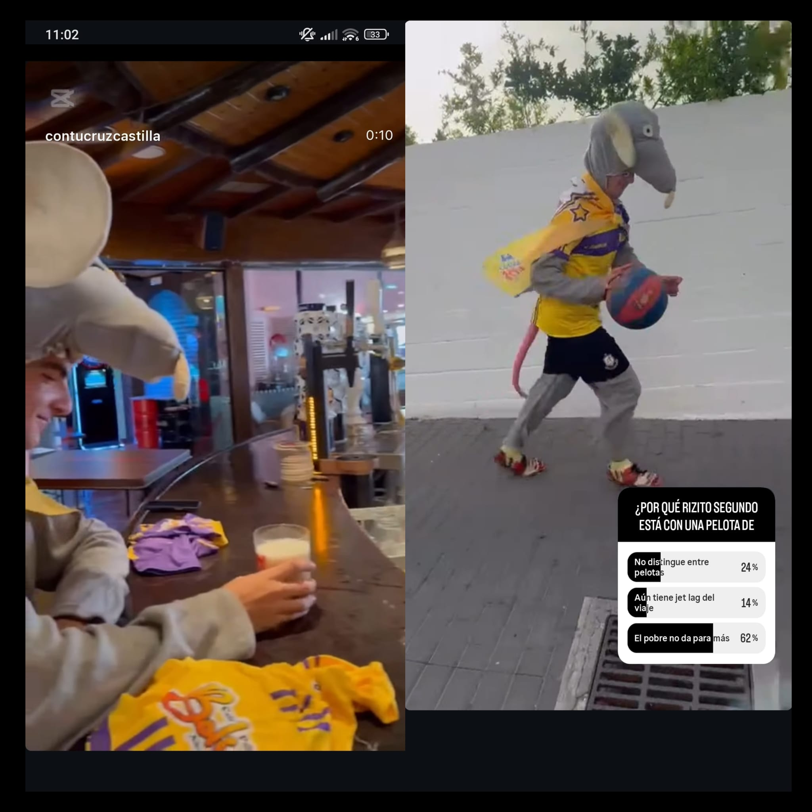
¡Confirmado! El sorteo de la fase de grupos será este jueves desde la Casa Real Hermandad de Nuestro Padre Jesús Nazareno
18 junio 2025
La emoción del Torneo Morao 2025 continúa creciendo, y este jueves 19 de junio viviremos un momento clave en el desarrollo de la competición:
el sorteo oficial de la fase de grupos masculinos. Y no se celebrará en cualquier lugar… sino en la sede de la Real Hermandad de Nuestro Padre Jesús Nazareno.
El evento, que tendrá lugar en la tarde-noche del jueves, se ha preparado con toda la solemnidad de las grandes citas. Se espera una ceremonia “a la altura”,
con bolas numeradas, tensión en el aire y probablemente algún que otro comentario improvisado por parte de los presentes.
Según fuentes internas, los encargados del sorteo serán “hermanos preparados para la ocasión, con trajes oscuros, corbata y nervios de acero”.
“Queremos hacer historia y que el sorteo se viva como lo que es: el inicio real del torneo”, apuntó uno de los organizadores.
Ya se barajan posibles emparejamientos polémicos. Desde Canteranos Jr. aseguran que “aceptan a cualquiera... menos a SPQR, mientras que CD Giro prefiere un grupo sin “energía tóxica”.
Por su parte, Atlético Polito se ha limitado a decir: "Nos toque quien nos toque, saldremos a grabarlo todo".
El sorteo podrá seguirse en directo a través de redes sociales y marcará el inicio de la cuenta atrás definitiva para el pitido inicial.
¡Que la suerte reparta los goles!
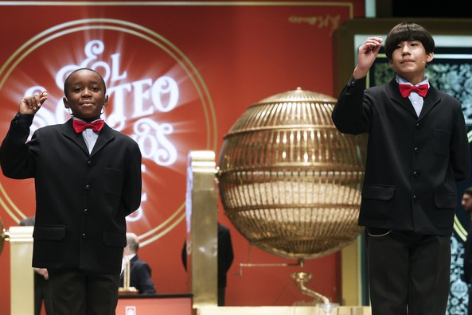
Rizitos II responde a los mataratas: llega en furgoneta oficial y ficha por Con Tu Cruz Castilla
18 junio 2025
Cuando parecía que la guerra simbólica entre Canteranos Jr. y Con Tu Cruz Castilla no podía subir de nivel, apareció él.
Rizitos II, la controvertida y carismática mascota del club castellano, hizo su aparición triunfal en redes sociales bajando de una furgoneta,
envuelto en misterio y portando una sombrilla. Acto seguido, fue presentado con la nueva equipación del equipo como si se tratara del fichaje del año.
La publicación llega justo después del vídeo de Canteranos Jr., donde compraban trampas para ratas dedicadas a Rizitos. La respuesta, clara y sin rodeos:
“Ese veneno no me hace nada”. Según fuentes internas del club, Rizitos II ha firmado un contrato simbólico de por vida y “está más fuerte que nunca”.
Las reacciones no se han hecho esperar. Desde Atlético Polito declararon: "Nosotros llevamos psicólogos para lidiar con la presión… ellos llevan roedores".
En Totys, las bromas apuntaron más alto: "Si aparece Rizitos III ya hablamos de franquicia".
En cualquier caso, lo que parecía una mascota ha pasado a convertirse en un fenómeno mediático. Y todo apunta a que Rizitos II no solo está dentro… sino que viene a marcar territorio.
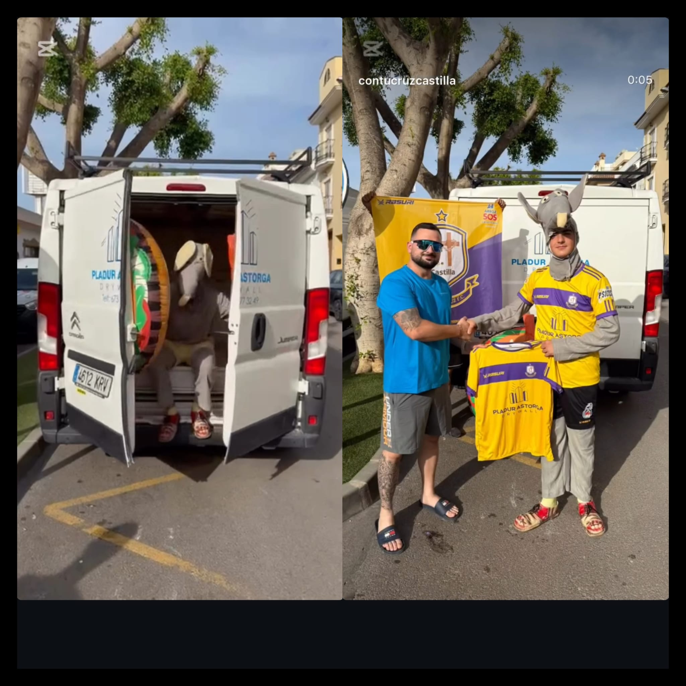
Canteranos Jr. declara la guerra a Rizitos II… con trampas de mataratas
18 junio 2025
En lo que ya es uno de los momentos más surrealistas de la previa del Torneo Morao 2025, el equipo de Canteranos Jr. ha publicado en Instagram un vídeo donde se les ve comprando
trampas para ratas y veneno industrial… todo bajo el título "Esperando a Rizitos II...".
Para los despistados: Rizitos II es la querida (y polémica) mascota de Con Tu Cruz Castilla F.C., una rata de peluche con más protagonismo en redes que algunos jugadores del torneo.
El gesto no ha pasado desapercibido y las redes han ardido en segundos.
Desde Con Tu Cruz Castilla F.C., la respuesta no se ha hecho esperar: "Podréis comprar trampas, pero Rizitos siempre cae de pie. Y en octavos también." A lo que Canteranos replicó con una historia adicional
mostrando una trampa cebada con una mini camiseta del equipo rival.
La organización del torneo ha pedido “tranquilidad” y “que los beefs no incluyan fauna ficticia”, mientras Tromponetas aprovechaba para comentar: "Nosotros solo llevamos veneno... en el banquillo".
Sea como sea, Rizitos II entra en el torneo como el animal más buscado. Literalmente.
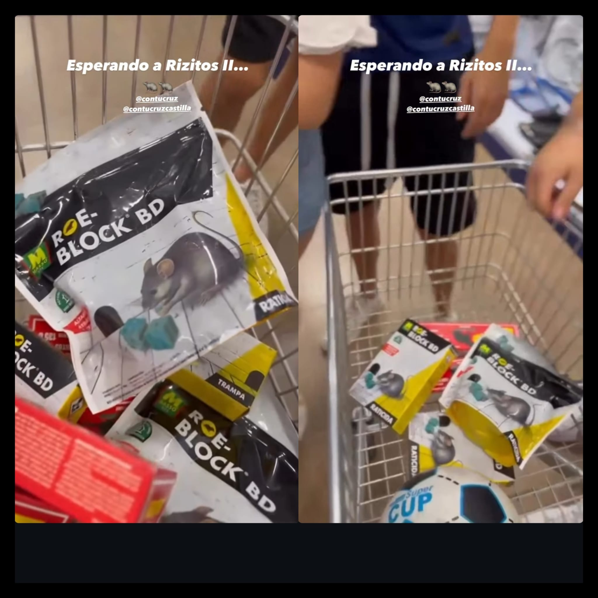
Tromponetas F.C. se pone cinematográfico: presentación digna de Champions (o de Hollywood)
17 junio 2025
Tromponetas F.C. ha vuelto a romper esquemas. Esta vez no con un meme, sino con una producción audiovisual que ha dejado a más de uno con la boca abierta. En su última publicación, el club ha presentado su nueva equipación y plantilla con una estética que mezcla gloria futbolera y cine de autor.
Focos traseros, niebla de guerra y planos perfectamente calculados que alternan entre interiores oscuros y campos iluminados. Si no sabías si estabas viendo una promo de Adidas o un tráiler del Torneo Morao, no estás solo. “Queríamos mostrar que vamos en serio. Esto no es un torneo más, es nuestra película”, declaraba uno de los jugadores implicados.
Las reacciones no tardaron. Desde CD Giro soltaron: "Nosotros también tenemos foco... pero en la táctica", mientras que en el entorno de Totys se oyó algo como "Mucho humo y luces, esperemos que no les falte luz el sábado".
Lo que está claro es que Tromponetas ha elevado el estándar visual del torneo. Solo queda por ver si el espectáculo cinematográfico se traduce en puntos... o en otra secuela de drama deportivo.
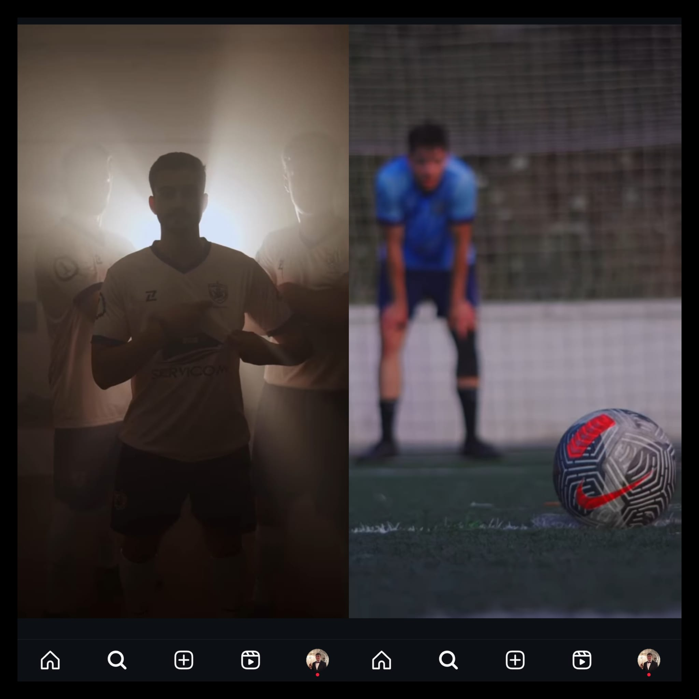
Escándalo en Atlético Polito: intervención judicial y 500 litros de polémica
17 junio 2025
Saltan las alarmas en el entorno de Atlético Polito tras conocerse que el club ha sido intervenido judicialmente por orden del Juzgado de Instrucción nº14 de Málaga.
El motivo: su hasta ahora presidente está siendo investigado en el marco de una operación criminal bajo el alias "Juan Victoria", relacionada con el hallazgo de 500 litros de cerveza caliente
en su domicilio.
Aunque el ya ex-presidente ha quedado en libertad bajo fianza, la institución ha sido temporalmente supervisada por las autoridades. Desde el club aclaran que Atlético Polito sigue en funcionamiento,
ajeno a la investigación, y que estarán presentes el próximo sábado “dándolo todo en el terreno de juego (y no en el sótano)”.
El comunicado también informa de que ha quedado en pausa un supuesto proceso de adquisición por parte de un inversor árabe, cuyo interés en el club ha quedado congelado “a la espera de que se enfríe la cerveza”.
Desde Con Tu Cruz Castilla F.C., no han tardado en reaccionar: “Nosotros colaboramos con McDonald’s, no con el crimen organizado”. Y desde SPQR, en tono más distendido, se ha propuesto ir al partido del sábado
con litros fríos en solidaridad.
Lo que está claro es que Atlético Polito entra al torneo con más tramas que una serie de Netflix. Y aún no ha rodado el balón.
Totys presume de talento en redes: chilenas, saltos y mucho flow
16 junio 2025
El equipo de Totys F.C. ha dejado claro que si hay algo que no les falta para el Torneo Morao 2025 es confianza (y potencia en la pierna).
En su última publicación, han compartido varias imágenes de sus jugadores ejecutando acrobacias de otro planeta: chilenas, voleas en suspensión y hasta lo que algunos ya llaman
“el golpe del atardecer”.
En el post, se puede ver a los jugadores en una pista de cemento dándolo todo mientras el sol cae de fondo, como si de un anuncio de Nike se tratase. Fuentes del club aseguran que "ni el balón sabía lo que iba a pasar".
Las respuestas no se hicieron esperar. Desde SPQR preguntaron si estaban entrenando para el torneo o para el Circo del Sol. CD Giro, más sutil, reaccionó con un emoji de palomitas.
En cambio, Tromponetas F.C. fue más directo: "Mucho salto, pero al final el que vuela es el balón fuera del campo".
Entre memes y fuegos cruzados, lo que es innegable es que Totys llega con calidad y confianza. Queda por ver si en el campo brillarán igual… o si las acrobacias se quedan en Instagram.
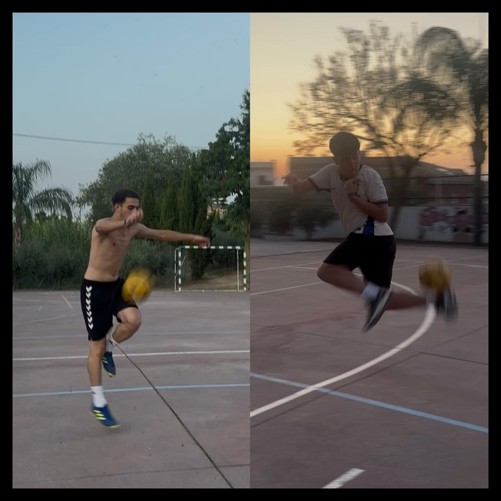
CD Giro saca el dron y se pone cinematográfico: “Últimos retoques desde las alturas”
16 junio 2025
Mientras algunos equipos aún buscan su once titular, CD Giro ya ha encontrado su mejor plano: el aéreo. En su última publicación, el conjunto violeta ha dejado claro que no solo se preparan en el césped, sino también en las redes.
Un vídeo grabado con dron muestra al equipo unido en círculo en el centro del campo, en una imagen digna de trailer de Netflix. “Última semana. Últimos retoques”, escribían en su perfil oficial, acompañando una escena que ha generado tantos aplausos como memes.
Desde Tromponetas F.C. no han tardado en reaccionar: “Bonita toma. Ojalá el balón no les pase por encima igual de rápido que el dron”. Totys, por su parte, ha compartido el vídeo con el audio de “Misión Imposible” y un emoji de cámara.
Sea como sea, CD Giro apuesta por la épica y el marketing visual. Habrá que ver si el sábado el hype se traduce en goles… o solo en seguidores nuevos.
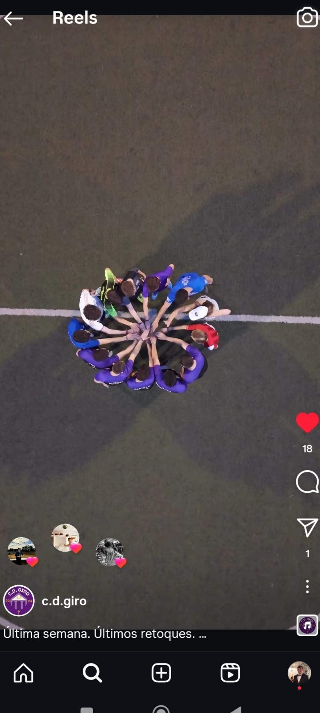
Tromponetas F.C. presenta su nueva equipación… y presume de corona
15 junio 2025
Tromponetas F.C. ha mostrado al mundo su nueva piel para el Torneo Morao 2025, y no ha dejado indiferente a nadie. El conjunto dorado con detalles púrpura ha sido bien recibido por la afición,
pero lo que más ha llamado la atención ha sido un parche en la manga con el número 1 rodeado de una corona de espinas.
El mensaje es claro: “Ya fuimos campeones, y no lo vamos a olvidar”. Desde el club han declarado que se trata de “una forma de rendir homenaje a nuestra historia y recordar que este escudo ya sabe lo que es levantar la copa”.
La respuesta no se ha hecho esperar. Desde SQPR, han comentado que "con un parche no se gana un torneo", mientras que Real Canteranos soltó en tono burlón: "El uno les queda bien… porque es el número de veces que nos han ganado en amistosos."
Por su parte, CD Giro y Con Tu Cruz F.C. se han limitado a darle “like” a la publicación, aunque fuentes cercanas aseguran que el grupo de WhatsApp de ambos clubes “ha ardido en comentarios irónicos”.
¿Demasiada confianza o simple memoria histórica? Lo que está claro es que Tromponetas F.C. entra al torneo marcando territorio… en la manga y en la actitud.
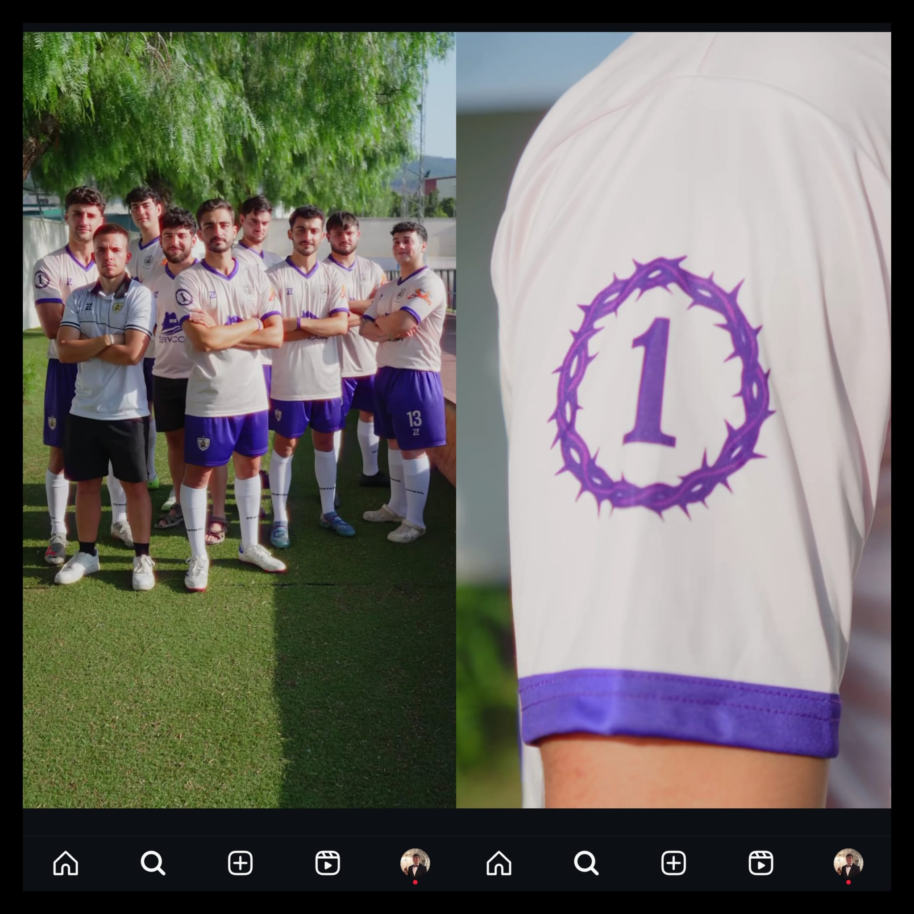
Tromponetas F.C. cambia el juego: “Memes, humor y actitud”
14 junio 2025
La directiva de Tromponetas F.C. se ha reunido esta semana y ha tomado una decisión que podría cambiar el curso del torneo…
al menos en redes sociales. En un comunicado oficial, el club anunció que a partir de ahora, sus armas no serán solo el balón y las botas, sino también los memes.
“Hemos notado una falta de actividad en redes. Vamos a solucionarlo como se debe: con humor y actitud”, reza el mensaje que ya ha generado decenas de respuestas
y alguna que otra pullita entre bastidores.
Desde CD Giro, el community manager respondió con un escueto: “Menos memes y más entrenar”, mientras que Real Canteranos ha preferido mantenerse al margen,
aunque alguna fuente cercana ha soltado que "esto no es Twitter, es un torneo de verdad".
La iniciativa de Tromponetas ha sido aplaudida por buena parte de la afición, que ya prepara palomitas para “el espectáculo digital” prometido.
En palabras del club: “Contra todo y contra todos”. No sabemos si eso incluye a TikTok… pero en Instagram ya se han notado los temblores.
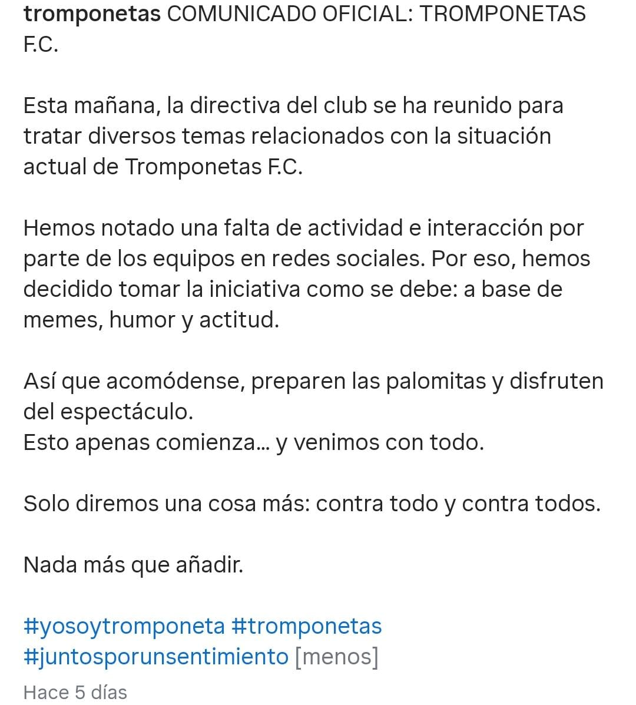
Mientras unos se pelean, otros organizan sinergias: CD Giro y Canteranos Jr. predican la paz… ¿o la indiferencia?
14 junio 2025
La última publicación que circula por redes sociales ha dejado claro que en el Torneo Morao 2025 hay dos formas de prepararse:
con fuego cruzado y rivalidades en redes, o con sonrisas, amistosos y buena vibra.
En la imagen viral, los emblemas de Totys y Tromponetas F.C. aparecen representando una batalla constante, mientras
que CD Giro y Canteranos Jr. se muestran como seres iluminados, con neuronas activas y paz interior.
“Mientras otros se gritan, nosotros jugamos”, reza el pie de foto no escrito pero claramente insinuado.
La publicación no ha tardado en generar respuesta: desde Tromponetas han afirmado que "la paz está bien, pero no gana partidos".
Por su parte, una fuente anónima de Totys disparó con ironía: "Se creen Buda porque jugaron un amistoso. Que no se olviden de que esto no es un retiro espiritual,
es un torneo oficial y se viene a competir, no a abrazarse."
Incluso desde Con Tu Cruz Castilla F.C., tradicionalmente más sutiles, dejaron caer en su canal privado: "Ya veremos quién medita más cuando empiecen los goles".
Giro y Canteranos, por su parte, no han entrado al trapo, fieles a su línea zen. El sábado se verá si la meditación da puntos… o si la realidad los baja de la nube.
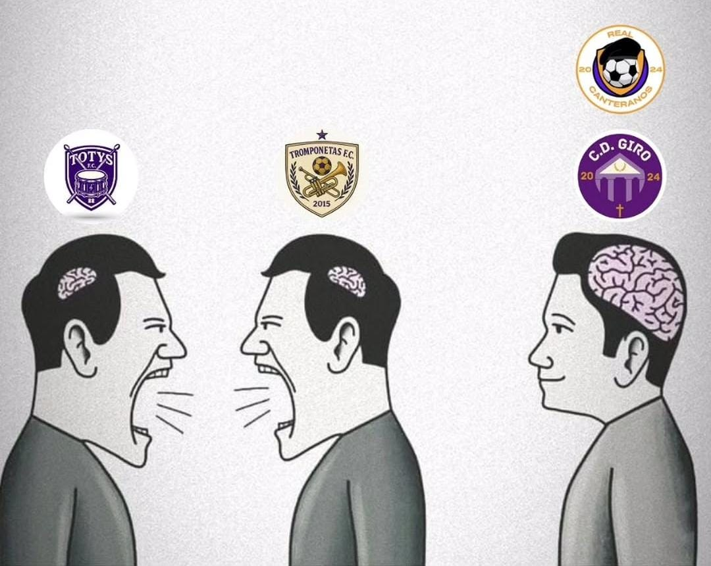
Los equipos femeninos se refuerzan: fichajes estrella en Tromponetas y Totys
13 junio 2025
La categoría femenina del Torneo Morao 2025 también se mueve. Esta semana hemos tenido confirmación de dos incorporaciones que han sacudido
el panorama del fútbol alhaurino: Tromponetas Femenino ha anunciado a bombo y platillo la llegada de Carlota Lao, mientras que Totys Femenino ha
presentado a su nueva jugadora en un entorno menos habitual... pero igual de solemne.
Carlota, con pasado en múltiples campos de batalla y presente en forma de “box to box total”, ha sido calificada por sus nuevas compañeras como "la que te
mete un pase y una colleja en la misma jugada". Su fichaje ha levantado alertas en el resto de equipos, especialmente por su fama de incansable en el medio campo.
En el otro lado del ring, Totys Femenino ha optado por un enfoque espiritual: la nueva jugadora fue presentada nada menos que en la capilla del Nazareno,
arropada por miembros de la hermandad. Según fuentes internas, "ya domina las diagonales y los rezos en latín".
El comentario más viral ha sido el de un aficionado rival que respondió al anuncio con un directo: "Fichaje acertado, equipo equivocado".
Desde la organización, solo podemos decir una cosa: ¡esto se pone calentito y aún no ha empezado!
CD Giro y Canteranos Jr. calientan motores en un amistoso de alto voltaje
10 junio 2025
En la tarde del martes se disputó un partido amistoso entre CD Giro y Canteranos Jr., dos de los conjuntos con más promesa del panorama alhaurino,
en lo que muchos ya han catalogado como “la Supercopa no oficial del Morao 2025”.
El encuentro, que transcurrió sin incidentes graves (aunque sí con alguna entrada propia de otro deporte), sirvió para que ambos equipos midieran fuerzas
antes del esperado debut oficial. Las gradas improvisadas se llenaron de familiares, fans y ojeadores ficticios.
Las redes sociales ardieron tras la publicación conjunta con el mensaje “GIRO 🤝 CANTERANOS”, algo que ha generado más dudas que certezas:
¿alianza táctica? ¿pacto de no agresión? ¿campaña de marketing? Desde Tromponetas F.C., se ha lanzado una pullita: "Nosotros no hacemos amistosos, hacemos historia."
Por ahora, lo que está claro es que el ambiente entre estos dos conjuntos es de máxima cordialidad… pero habrá que ver si esa buena onda aguanta
cuando haya puntos en juego.
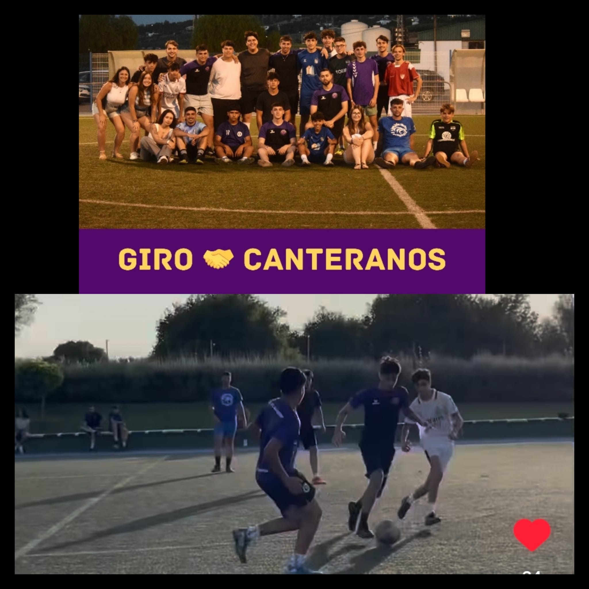
Real SPQR Balompié rompe el silencio con un mensaje que sacude las redes
5 junio 2025
Tras semanas en las que su actividad mediática rozaba el monacato, el equipo Real SPQR Balompié ha sorprendido este miércoles con un comunicado
en redes sociales que ha causado revuelo en la comunidad futbolera de Alhaurín.
En él, aseguran que no han buscado “aplausos, solo trabajar” y que llegan “más unidos que nunca” a su próxima cita. La publicación, acompañada de una fotografía
del equipo al completo posando con camisetas personalizadas y una pancarta de su nuevo patrocinador INMOPORSÁN, ha sido interpretada por algunos como una
declaración de intenciones.
Mientras tanto, fuentes internas de Con Tu Cruz CastillaF.C."A nosotros también nos patrocina un 'inmo'... inmoralidades".
También desde Tromponetas F.C., otro de los favoritos al título, han compartido la publicación con un escueto pero directo mensaje: "Mucho silencio, pero ya nos los cruzaremos en el campo."
Lo que está claro es que la tensión pretorneil está en máximos y que Real SPQR Balompié, en silencio o con pancarta, tiene pensado dar guerra.
Habrá que ver si el sábado el ruido lo hacen en el marcador o se quedan en modo "mute".
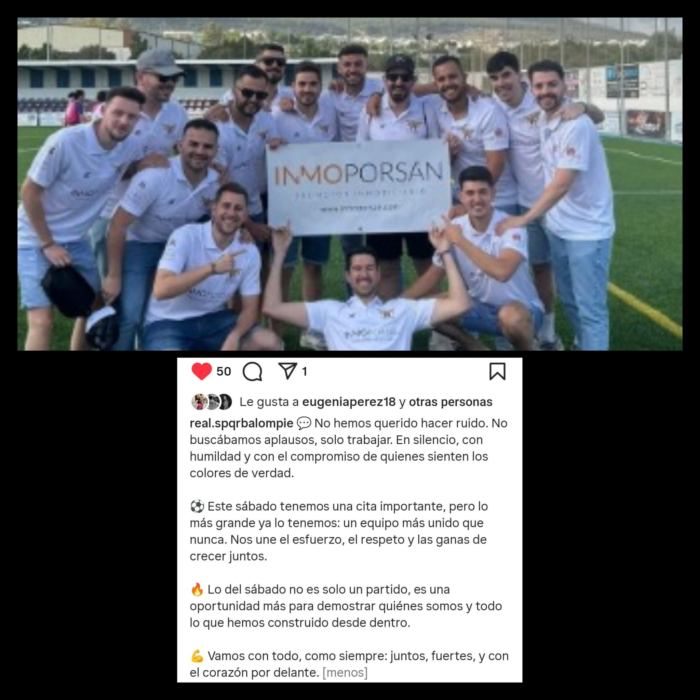
Un jugador de Real Canteranos intoxicado tras ingerir el Happy Meal de Con Tu Cruz F.C.
02 junio 2025
Esta mañana, nuestro corresponsal en Málaga, acudía al Hospital Virgen de la Victoria para comprobar el estado de salud de uno
de los integrantes de Real Canteranos, quien se había intoxicado tras ingerir un Happy Meal de la colaboración de la entidad americana McDonalds con
Con Tu Cruz F.C.
Aunque el paciente se encuentra en estado estable, se temía por su salud durante las primeras horas de la intoxicación. Tras pedir explicaciones
el presidente de Real Canteranos, la cuenta oficial de Con Tu Cruz Castilla F.C. declaró lo siguiente: "Las hamburguesas las hace la Rata. No entiendo qué ha podido pasar".
Estas declaraciones no han sentado bien en el entorno de Real Canteranos, que emprenderá medidas legales y elevarán el caso por un supuesto atentado
contra la salud pública.
Equipos como CD Giro, Tromponetas F.C. y Totys Femenino han decidido mantenerse al margen hasta que salga una resolución judicial.
Lanzamiento exclusivo Menú Happy Meal McDonald's x Con Tu Cruz Castilla F.C.
01 junio 2025
Esta semana hemos podido saber del lanzamiento exclusivo que el equipo militante del torneo 2025, Con Tu Cruz Castilla F.C., ha lanzado en
colaboración con la empresa estadounidense, McDonald's, un nuevo Menú Happy Meal , "una edición especial que une el sabor clásico con la pasión por un fútbol diferente",
como así indica el lema.
Cada uno de estos menús incluirá una figura de Rizitos y Cruzalino, figuras valuartes de esta entidad. Esta promoción estará disponible
por tiempo limitado en el McDonald's de Villafranco del Guadalhorce.
Según hemos podido saber, hay equipos tramando campañas para desincentivar su compra y así perjudicar financiaramente a la entidad alhaurina.
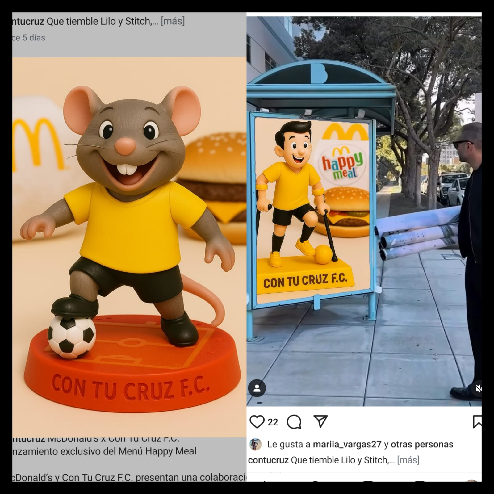
Polémica con el dorsal de un jugador del CD Giro
01 junio 2025
Hace unos pocos días el Club Deportivo Giro mostró en redes sociales los jugadores de la plantilla actual de este año, así como de sus dorsales.
No parecía haber ningún problema hasta que observaron cómo uno de sus jugadores, Alberto Ramírez, escogió el dorsal 69 para representar a su equipo.
Aunque según ha declarado en rueda de prensa este jugador: "No veo el problema, escogí este número porque el 6 y el 9 son mis números favoritos", muchos jugadores de la competición
han mostrado su rechazo a esta elección, fuentes de Con Tu Cruz F.C. han filtrado que jugadores en los entrenamientos han mencionado frases como las siguientes: "Lo que no sabe
este chaval es que 69 van a ser los goles que les vamos a marcar como nos emparejen contra ellos".
Mucha crispación en los días previos al torneo, aunque los directivos de
ambos equipos tratan de restarle importancia al suceso.
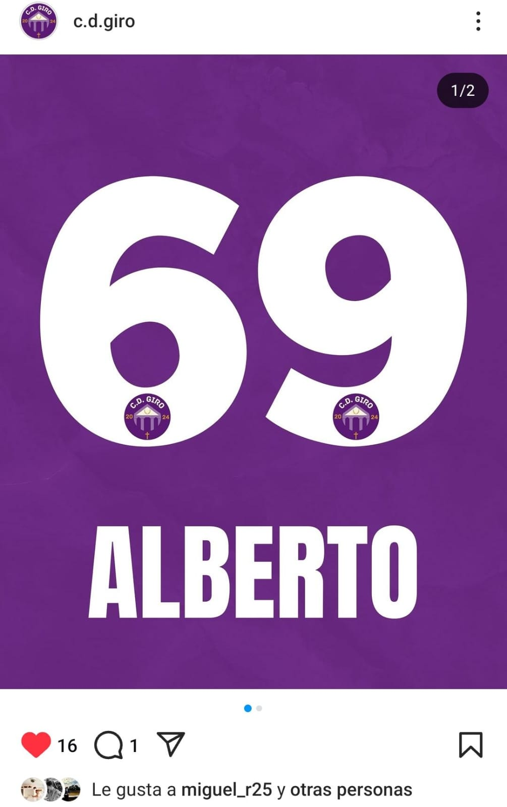